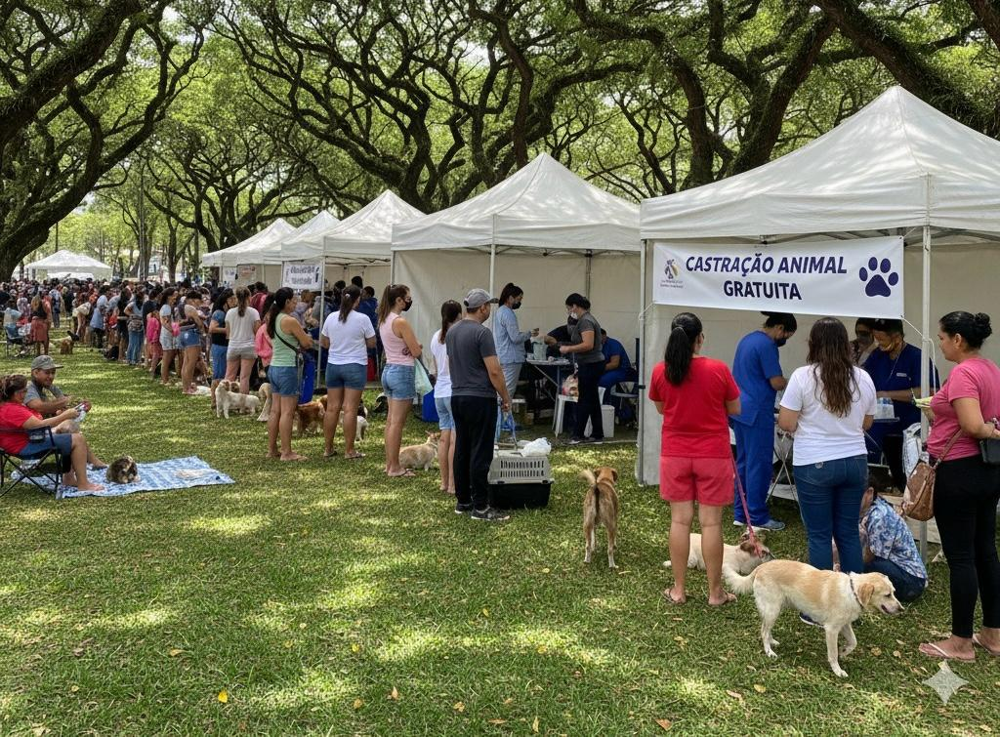
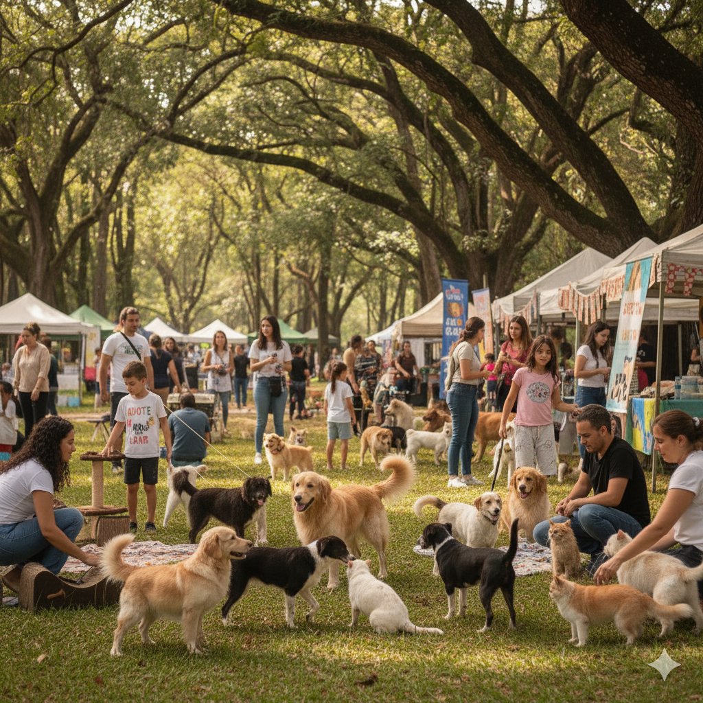
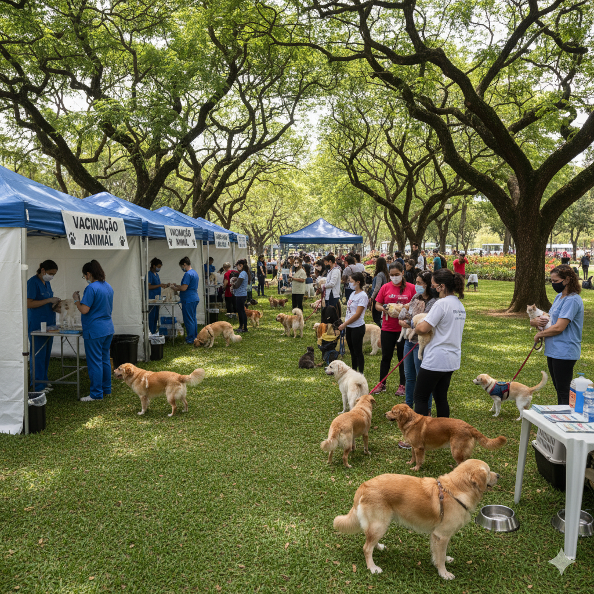
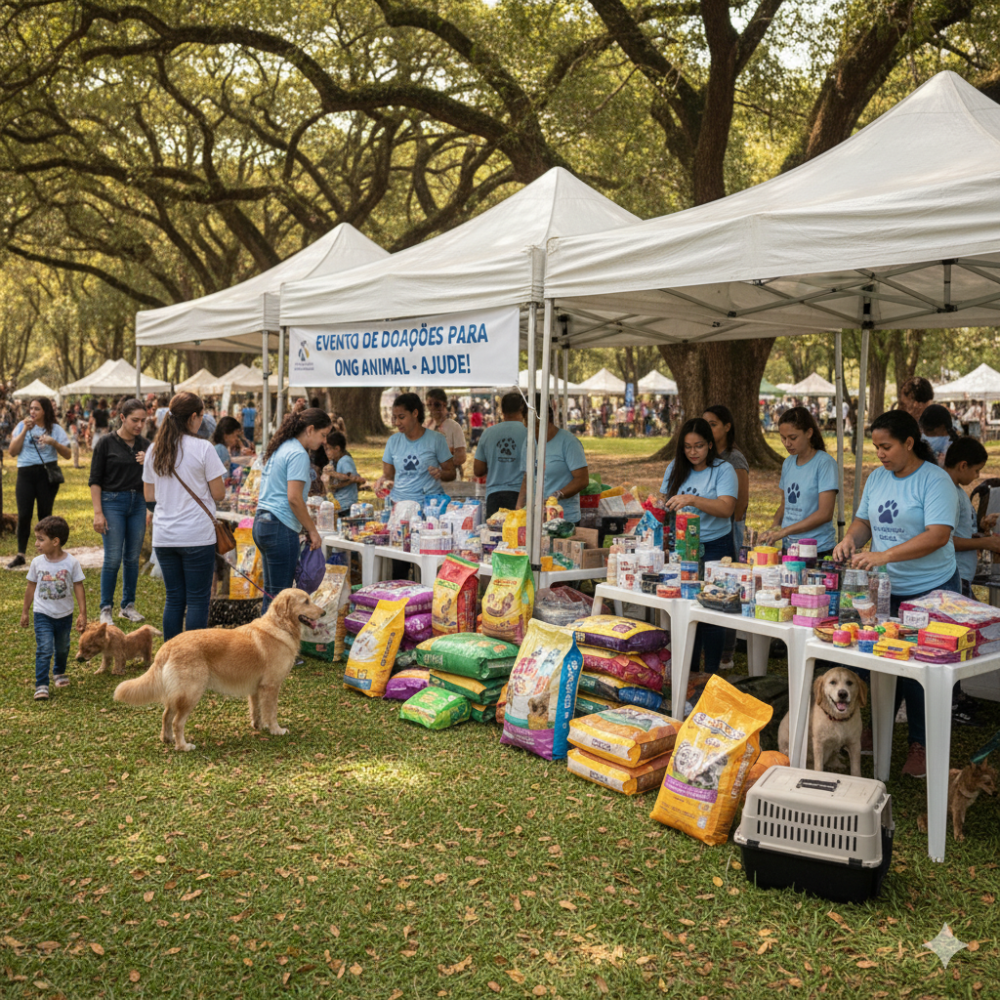
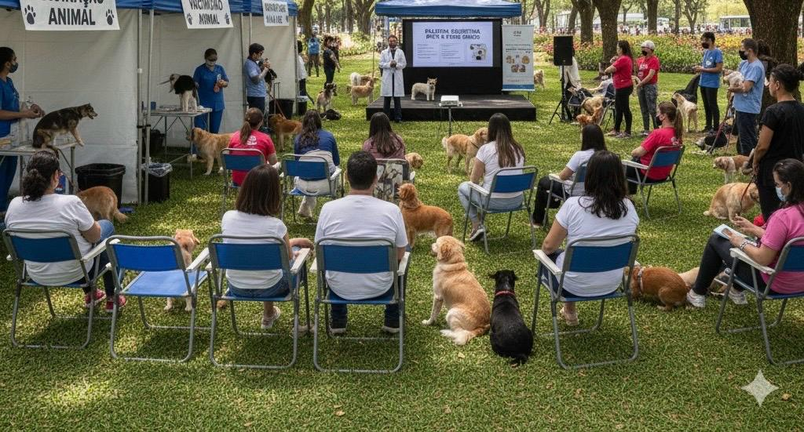

Projetos
Mutirão de Castração Solidária

Castração gratuita para gatos(a) e cachorros(a).
Cuidar é um Ato de Amor: Participe do nosso Mutirão de Castração Gratuita!
A Patinhas carentes tem o prazer de anunciar o nosso Mutirão de Castração gratuita para cães e gatos, uma ação essencial para o controle populacional e a saúde dos nossos melhores amigos.
Como Participar:
Para que seu animal seja atendido, é indispensável realizar o cadastro prévio na ONG. As vagas são limitadas para garantir um atendimento de qualidade e seguro para todos.👉 Clique aqui para cadastrar!
Previsão para o Mutirão em dezembro na praça parque feliz no centro.
Como Ajudar (Para Voluntários):
Este evento só é possível com a ajuda de pessoas incríveis como você! Precisamos de voluntários para organização, apoio aos tutores e cuidado com os animais no dia.
❤️ Quer ser um herói para os pets?
Entre em contato e seja voluntário: (WhatsApp) tel: (XX) XXXXX-XXXX

Feira de Adoção "Encontre seu Amigo"
Nossas feiras de adoção acontecem bimestalmente
fique de olho nas datas divulgadas que estarão no site e nas nossas redes sociais
Para ser um voluntário entre em contato nos nossos canais de comunicação.

Feira de Vacinação "Vacine seu Pet"
Nossas feiras de Vacinação acontecem semestralmente
É necessário estar cadastrado na ONG. Cadastrar-se!
fique de olho nas datas divulgadas que estarão no site e nas nossas redes sociais
Para ser um voluntário entre em contato nos nossos canais de comunicação.

Programa de Apadrinhamento "Meu Padrinho é o Bicho!"
Esse evento é focado na sustentabilidade e nas Doações.
Permitir que pessoas doem um valor mensal para ajudar a custear o tratamento de um animal específico (geralmente um que precisa de cuidados especiais ou que está há muito tempo na ONG)
Objetivo: Criar uma fonte de receita recorrente e um laço afetivo entre o doador e o animal ajudado.
O padrinho/madrinha recebe fotos e notícias mensais do seu afilhado
Para ser um voluntário entre em contato nos nossos canais de comunicação.

Patinhas na Escola: Educando para o Futuro
Focados na Educação Prevenção
Levar palestras e atividades lúdicas para crianças em escolas públicas e privadas sobre guarda responsável, respeito aos animais e os perigos do abandono.
Objetivo: Formar uma nova geração de tutores conscientes e empáticos.
Esse evento tem palestras, brincadeiras, cartilhas educativas e muito mais.
Fique de olho nas datas divulgadas que estarão no site e nas nossas redes sociais
Para ser um voluntário entre em contato nos nossos canais de comunicação.